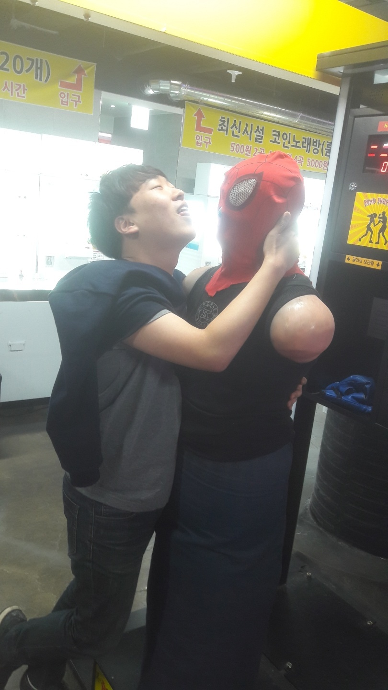

인물소개
이규상
조민우
박에녹

조민우
나이는 24살이고 생일은 2월 20일입니다. 저와는 중학교 1학년부터 친구였고, 친해지게 된 계기는 서로 맛있는 급식이 나오면 두 번씩 먹어서 친해지게 되었습니다.
공주대학교
대기과학과 17학번 3학년입니다.
대기과학과가 기상청 쪽으로 취업하는 과여서 대기과학과를 날씨학과라고 자주 놀립니다.
현재는 저와 가장 가까운 곳에 살고 있고, 제가 청주에 있을 땐 저와 자주 피시방에 갑니다.